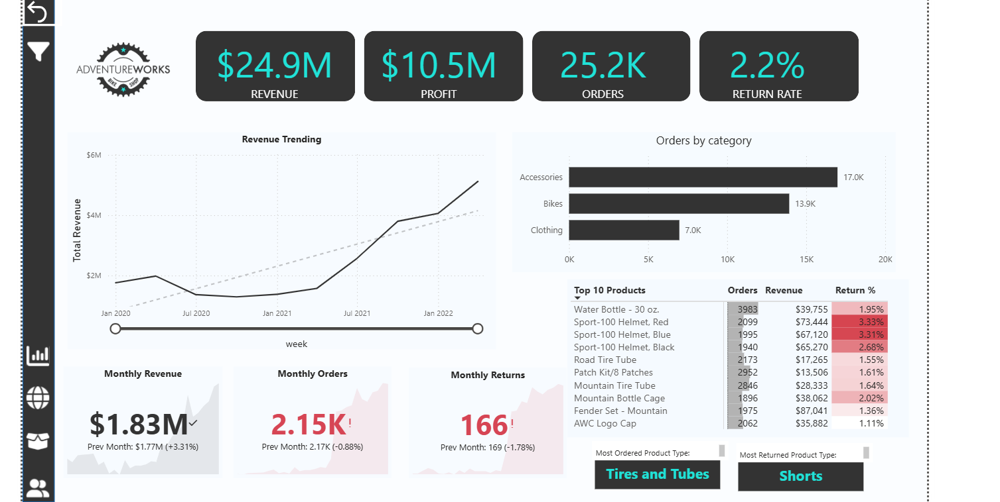
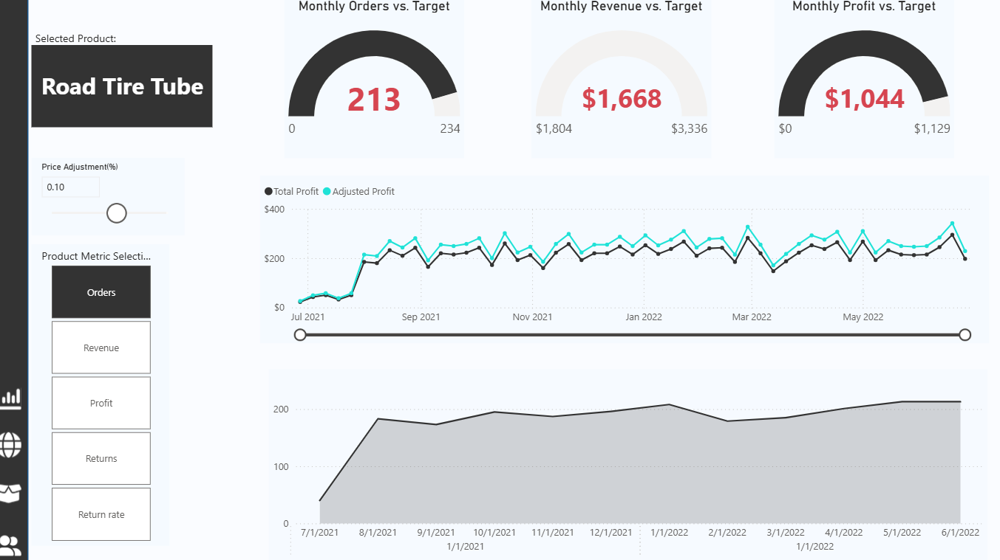
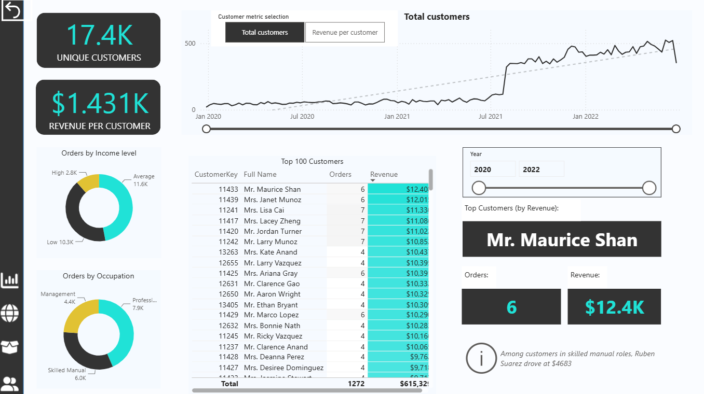
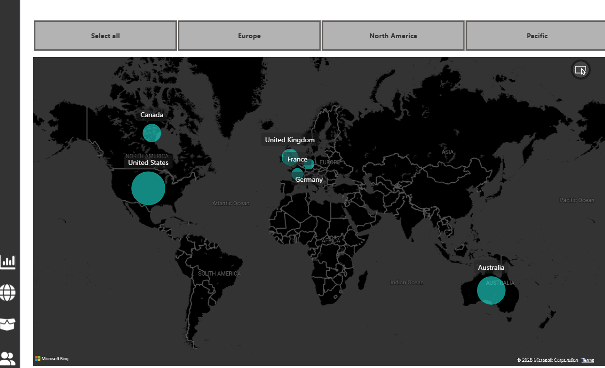

Retail Sales Analytics
A revenue, profit, and customer/product performance dashboard for a bike and cycling-gear retailer (AdventureWorks) — $24.9M in revenue and 25.2K orders analyzed across four report pages, from company-wide trends down to individual products, customers, and markets.
The problem
Raw order and return data across products, customers, and territories doesn't tell you where the business actually stands: is revenue trending up or down against target, which product categories and specific SKUs are worth the shelf space, which customer segments are the most valuable, and where return rates are eating into margin.
Data model
This one's an older project — built a few years ago while working through a Power BI
course (Maven Analytics, via Udemy), so unlike Supply Chain this wasn't a schema I
designed myself, and unlike Healthcare I don't know the original source of the data.
Eight real tables back the report: a Sales Data fact table (grain: one row
per order line) joined out to Customer Lookup, Product Lookup
(itself split into Product Subcategories Lookup and
Categories Lookup), Territory Lookup, and
Calendar Lookup, plus a separate Returns Data table. A few
other tables in the file are course-demo scaffolding rather than real analytical data —
a dynamic metric-switcher and a What-if pricing-adjustment parameter — and aren't part
of the SQL below.
Key findings
- Revenue has been climbing steadily since mid-2021, more than doubling from its 2020–2021 low, with the most recent month ($1.83M) up 3.31% over the prior month — orders, on the other hand, dipped slightly (2.15K, -0.88%), suggesting average order value is what's driving the growth, not order volume.
- Accessories outsell Bikes on order count (17.0K vs. 13.9K orders), even though bikes are the higher-ticket item — a reminder that unit economics and order volume tell different stories about the same category mix.
- Helmets carry a disproportionate share of returns — the three best-selling Sport-100 helmet variants all show return rates of 2.7–3.3%, well above most other top-10 products, and "Shorts" is the single most-returned product type overall.
- Return rate sits at 2.2% company-wide, and monthly returns (166, -1.78% vs. prior month) are trending down slightly even as order volume also dipped — a mildly positive signal on product-fit or quality.
- The customer base is concentrated in five markets — United States, Canada, Germany, France, and the United Kingdom, plus Australia — with 17.4K unique customers averaging $1,431 in revenue per customer.
From the Power BI report
Built natively in Power BI Desktop with the DAX measures described above — four report pages, shown below.



